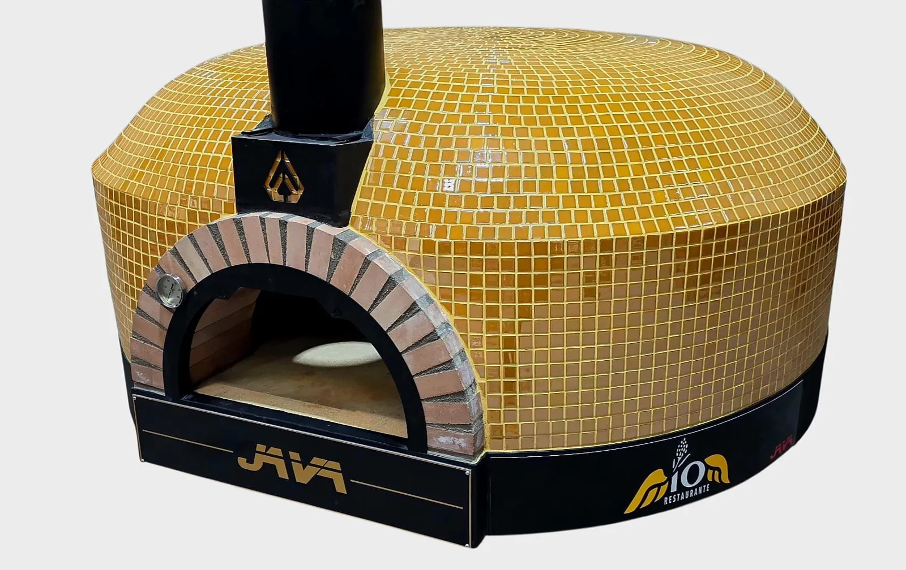
Hornos profesionales para pizza
Ladrillo a ladrillo.
Cúpula de mosaico, arco de ladrillo y el fuego en el centro de tu pizzería.
Desliza
Una pizzería tiene alma. El horno, su lugar.
El punto de partida de una nueva idea. La pieza que buscas al renovar. El horno que quieres poner a la vista de todos.
Tu proyecto. Tu horno. JAVA.Así se levanta un JAVA.
La cúpula, el arco y la base, pieza a pieza. Debajo del mosaico, ladrillo a ladrillo.
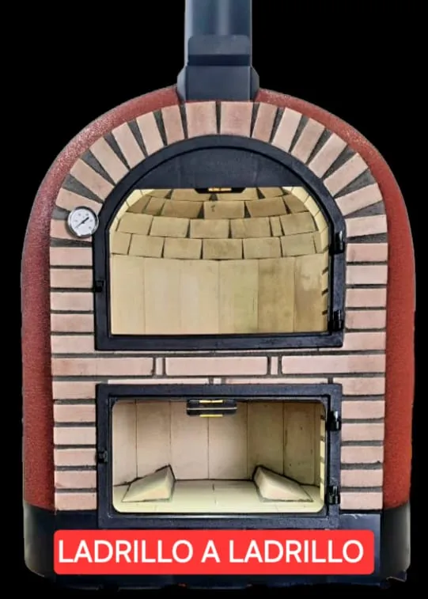
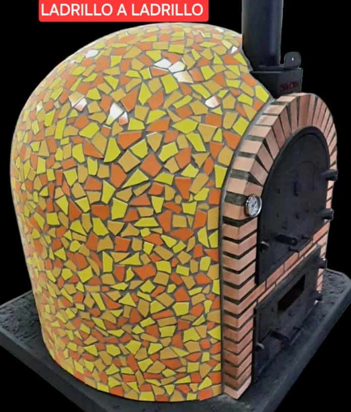
El horno en 3D es una maqueta conceptual: el despiece es ilustrativo, no técnico.
Un horno. Tu color.
Mosaico dorado, trencadís, negro, tricolor… Elige el que encaja con tu local.
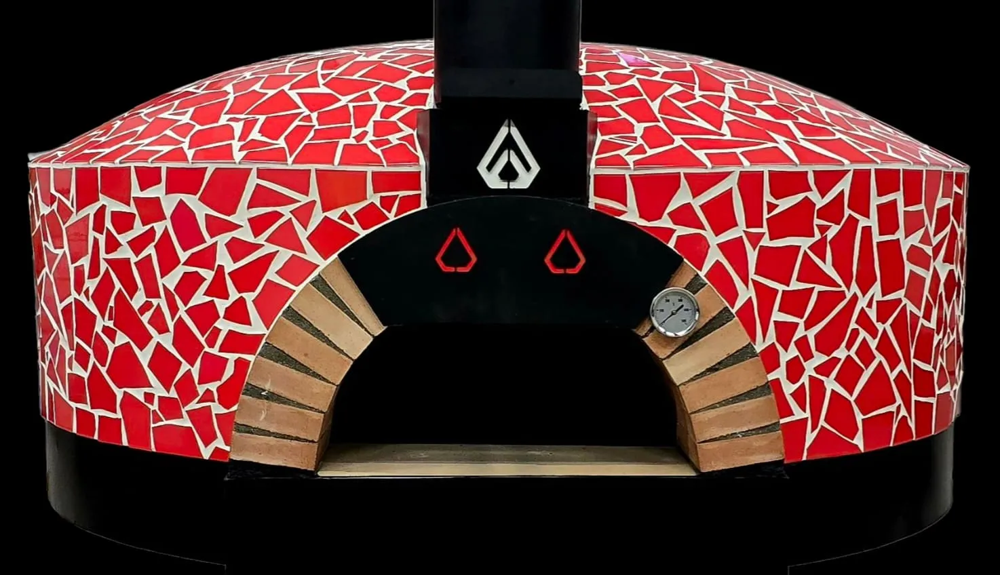
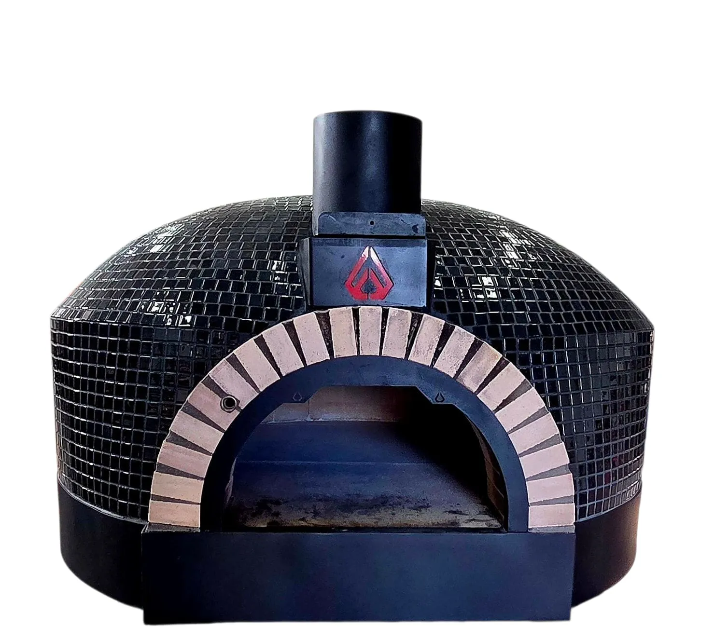
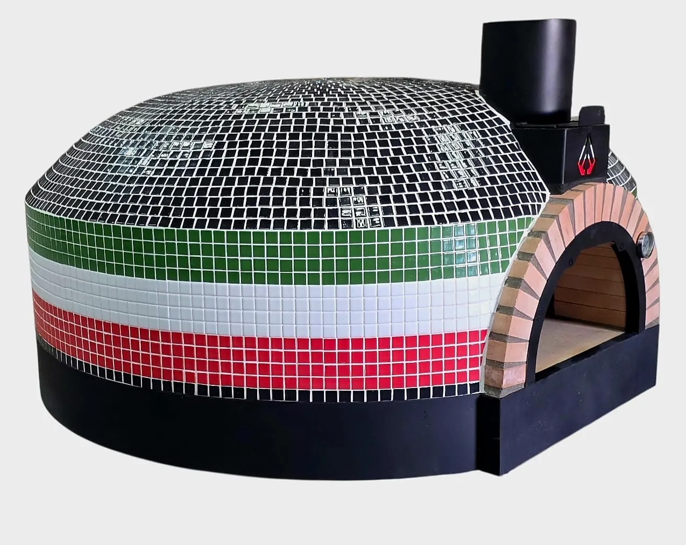
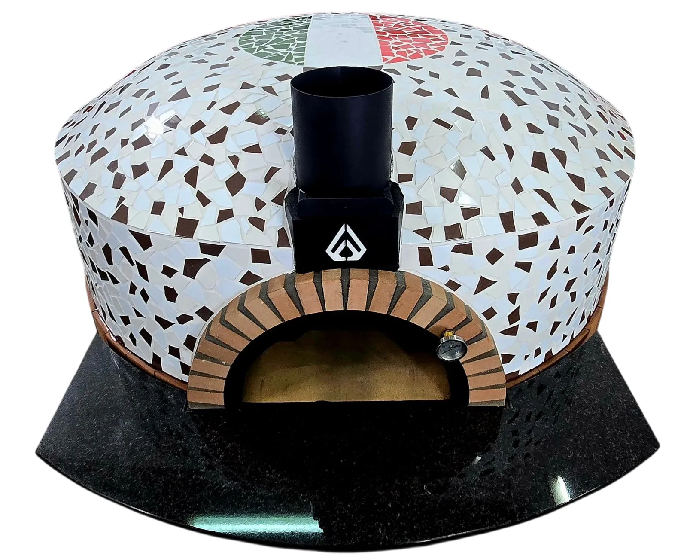
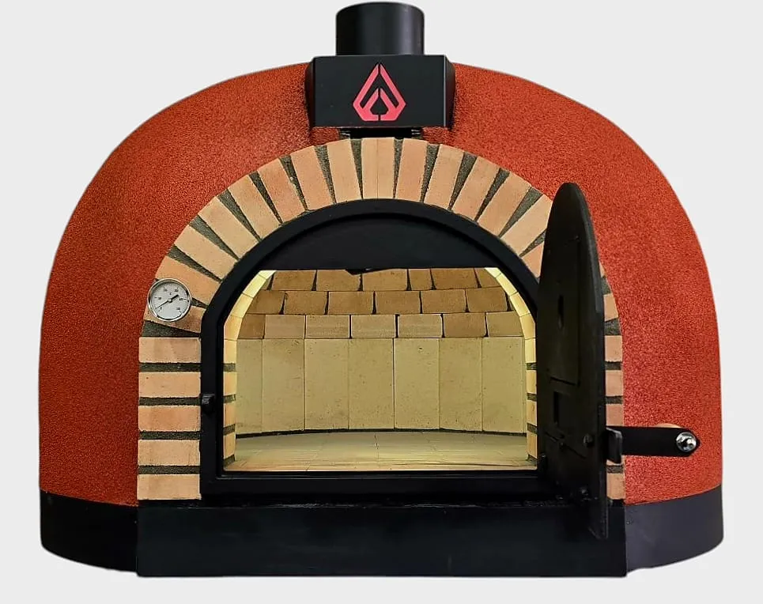
Fotografías reales de hornos JAVA. Colores, medidas y disponibilidad a confirmar al pedir presupuesto.
En pizzerías de verdad.
Hornos JAVA encendidos cada día en pizzerías, restaurantes y terrazas.
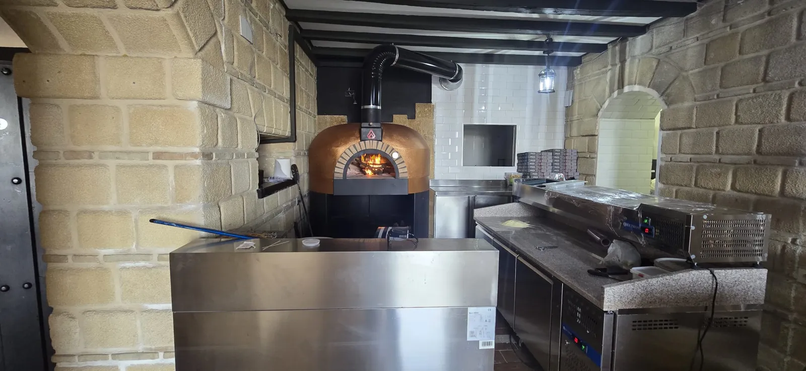
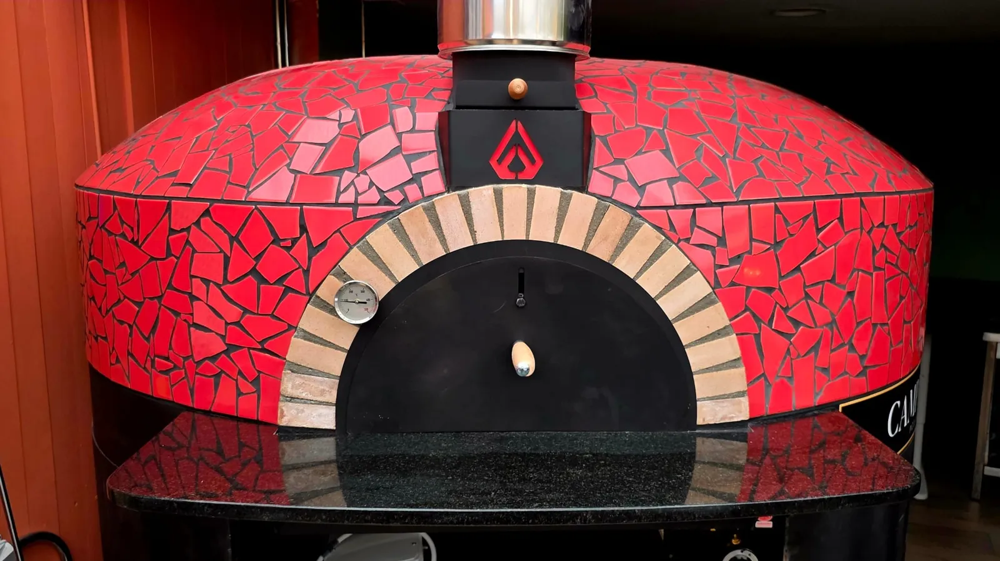
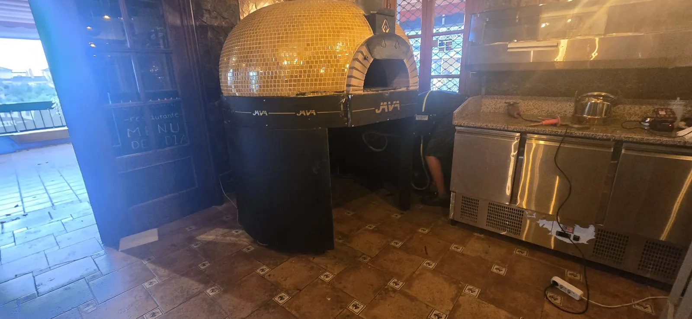
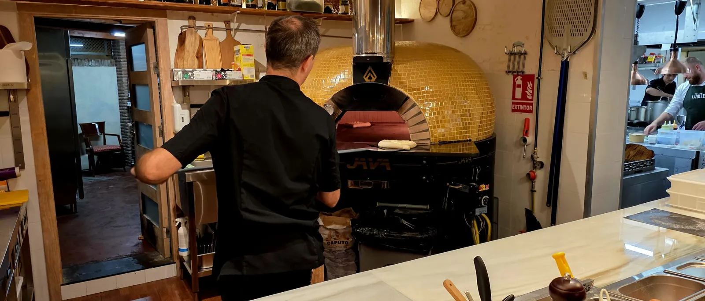
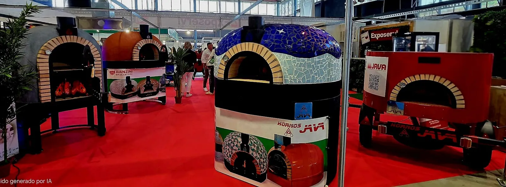
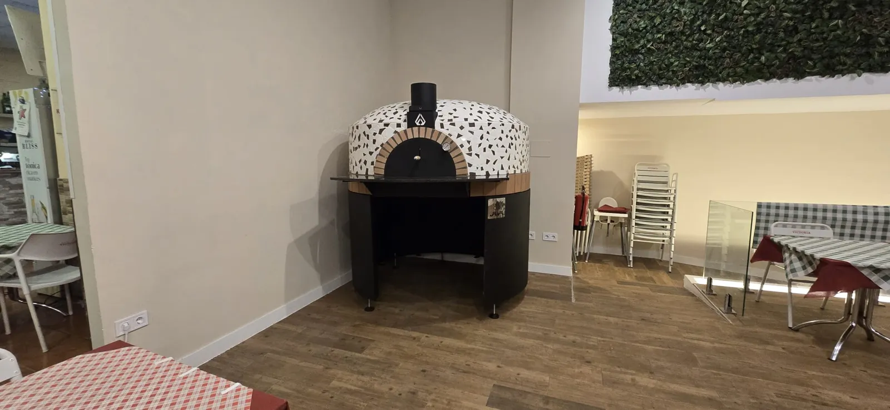
Hay un proyecto detrás de cada horno.
Cuéntanos el tuyo. Empezamos por ahí.
Buenas preguntas. Una conversación.
¿Cómo pido presupuesto?
Pulsa cualquier botón de WhatsApp: el mensaje sale preparado. Añade tu nombre, tu ciudad y tu proyecto, revísalo y envíalo.
¿Qué acabados puedo elegir?
En esta página ves seis acabados reales: oro, rojo, negro, tricolor, blanco y terracota. Pregúntanos por el que te encaje y confirma con nosotros colores y disponibilidad.
¿Qué tengo que tener en cuenta para elegir?
El espacio de tu local, el tipo de proyecto y el horno que te interesa. Las medidas, la configuración y las condiciones se confirman para tu caso antes de decidir.
¿Los hornos en 3D son modelos reales?
Son representaciones hechas a partir de las fotografías de nuestros hornos. Sirven para explorar la forma y los acabados, pero no acreditan medidas, materiales ni prestaciones.
Hablemos de tu pizzería.
Una idea, una apertura, un cambio. Cuéntanos qué tienes entre manos.
+34 645 466 308